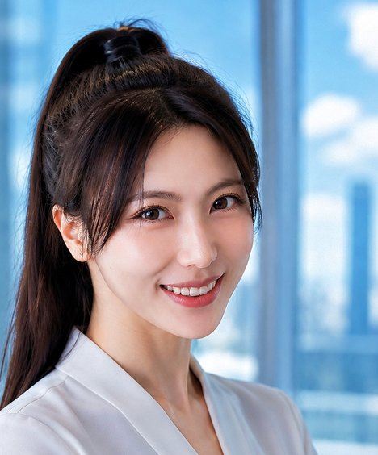

Lake Yang
- Visiting Researcher, Complex Multiscale Systems Group, Imperial College London
- Quantitative Analyst, UBS, London
∂²u/∂t² = c²∇²uClick or tap anywhere to make waves
About
I am a Visiting Researcher in the Complex Multiscale Systems Group at Imperial College London, working with Prof. Serafim Kalliadasis in the Department of Chemical Engineering, and a Quantitative Analyst at UBS in London. I graduated from the University of Manchester with a First Class BSc in Mathematics with Financial Mathematics.
My research is in physics-informed and structure-preserving machine learning for dynamical systems. I want learned models that generalise beyond the trajectories they were trained on, respect conservation laws over long horizons, and stay stable when used for PDE-based simulation. Waves and fluids are my favourite systems to work with: the water behind this page is the 2D wave equation, solved live in your browser with a finite-difference scheme.
A second line of work studies the geometry of multi-agent interaction, using Ollivier–Ricci curvature and Ricci flow on interaction graphs as forward-looking signals of collective behaviour such as herding. A direction I am keen to pursue is bringing these models into control and autonomy, where learned dynamics that stay physically consistent over long horizons are a natural ingredient for predictive, disturbance-aware control of robotic and multi-agent systems.
Alongside research, I build production AI systems at UBS, including agentic and retrieval-augmented platforms used by global markets teams. That work has taught me to engineer reliable, well-tested machine-learning software, and I bring the same habits to my research code.
I am applying for part-time doctoral study, starting in 2027.

Research interests
- Structure-preserving and physics-informed learning for high-dimensional dynamical systems
- Neural ODEs and physics-informed neural networks: generalisation across initial conditions, long-horizon stability and conservation laws
- Wave propagation and fluid dynamics: PDE simulation with learned models
- Geometry of multi-agent interaction: Ricci curvature and Ricci flow on interaction graphs as early-warning signals of collective behaviour
- Learned dynamics for robotic control and multi-agent systems
Applications so far include fluid dynamics, electromagnetics and complex systems.
News
- Sep 2026
Named a winner of the TechWomen100 Awards 2026.
- 2026
GeomHerd advanced to Phase 2 of the AAAI 2027 review.
- 2026
MPINeuralODE accepted at the AI4Physics Workshop, ICML 2026.
- May 2026
Preprints of MPINeuralODE and GeomHerd released on arXiv.
- Aug 2025
Joined the Complex Multiscale Systems Group at Imperial College London as a Visiting Researcher.
- 2025
Won the UBS Asset Management AI Hackathon.
Publications
-
ICML-W2026
MPINeuralODE: Multiple-Initial-Condition Physics-Informed Neural ODEs for Globally Consistent Dynamical System Learning
AI4Physics Workshop, ICML 2026 (accepted)
Neural ODEs often fit the trajectories they are trained on without learning the underlying dynamics. MPINeuralODE trains across multiple initial conditions with a curriculum and adds a soft physics-residual collocation loss. Models are evaluated jointly on out-of-sample accuracy, long-horizon stability and Hamiltonian conservation, using a compact 4×128 network (about 67k parameters).
@inproceedings{yang2026mpineuralode, title = {MPINeuralODE: Multiple-Initial-Condition Physics-Informed Neural ODEs for Globally Consistent Dynamical System Learning}, author = {Yang, L. and Malpica-Morales, A. and Papadakis-Wood, F.-I. and Kalliadasis, S.}, booktitle = {AI4Physics Workshop, International Conference on Machine Learning (ICML)}, year = {2026}, eprint = {2605.13305}, archivePrefix = {arXiv} } -
Preprint2026
GeomHerd: A Forward-looking Herding Quantification via Ricci Flow Geometry on Agent Interactive Simulations
Under review at AAAI 2027 (advanced to Phase 2)
GeomHerd detects herding in multi-agent simulations from the geometry of agent interaction. It builds interaction graphs from windowed action agreement, measures Ollivier–Ricci curvature with lazy random-walk kernels, and tracks a mean-curvature signal whose Ricci-flow dynamics reach a singularity time. A mean-field result links this geometric signal to the CSAD herding measure used in empirical finance. Applications include algorithmic herding, crowding and AI-monoculture systemic risk.
@article{yang2026geomherd, title = {GeomHerd: A Forward-looking Herding Quantification via Ricci Flow Geometry on Agent Interactive Simulations}, author = {Yang, L. and Su, J. and Zeng, J. and Lu, W. and Qian, X. and Zhang, W. and Wu, C. and Jin, D.}, journal = {arXiv preprint arXiv:2605.11645}, year = {2026} }
Experience
- 2025 – now
Imperial College London, Visiting Researcher
Complex Multiscale Systems Group, Department of Chemical Engineering, with Prof. Serafim Kalliadasis. Physics-informed neural ODEs (MPINeuralODE) and geometric analysis of multi-agent systems (GeomHerd).
- 2022 – now
UBS, Quantitative Analyst
Loop Engineering, Multi-Agent System with MCP, Graph-RAG platforms for Global Markets and Asset Management, and large-scale data engineering.
- 2023 – 2024
Johns Hopkins University, Research Assistant (remote)
With Prof. Fadil Santosa. Built a physics-informed neural network from scratch for Maxwell’s equations, modelling electromagnetic waves interacting with a conductive sheet.
- 2023
MITx, Teaching Assistant (remote)
2.25.1x Advanced Fluid Mechanics.
Education
- 2020 – 2023
University of Manchester, BSc (Hons) Mathematics with Financial Mathematics
First Class, GPA 3.92/4.0. Modules included PDEs, Fluid Mechanics, Green’s Functions and Stochastic DEs. Master’s offers in Applied Mathematics from Cambridge (Part III MASt), Columbia and Imperial College London.
Honours
- 2026
TechWomen100 Award, recognising leading women in technology in the UK
- 2025
Winner, UBS Asset Management AI Hackathon
- 2024
First junior at UBS to achieve Gold Certified Engineer, Certified Data Scientist and Certified Data Analyst
- 2021 – 2024
Volunteer of the Year, Highly Commended, four consecutive years, University of Manchester
- 2021
Department of Mathematics Scholarship, University of Manchester
Service and outreach
- 2021 – now
Founder, The Blue Letters Project, a charity across UK universities with 700+ volunteers providing mental-health support and community outreach
- Ongoing
Lead, Educate Stream, Women in Tech at UBS: a firm-wide AI training programme and internal tech conferences